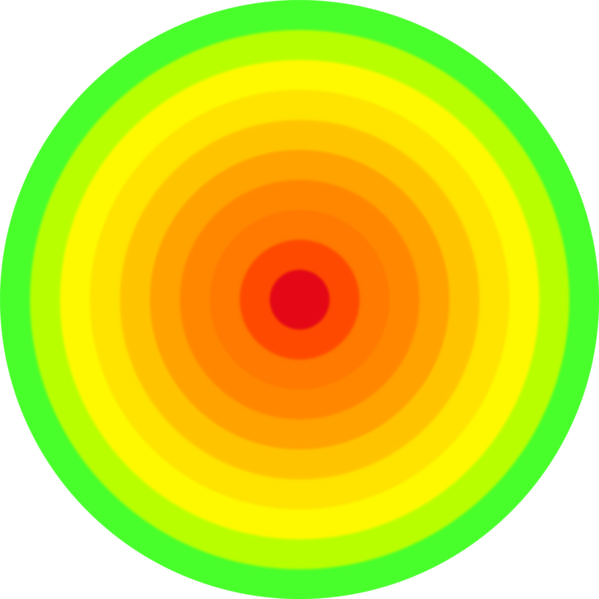

Immagini che il centro del cerchio rappresenti lei stesso. Clicchi il punto che meglio descrive quanto sente che la malattia ha influenzato la sua vita negli ultimi sette giorni. Più vicino al centro significa un maggiore impatto, più lontano un impatto minore.

Punteggio: